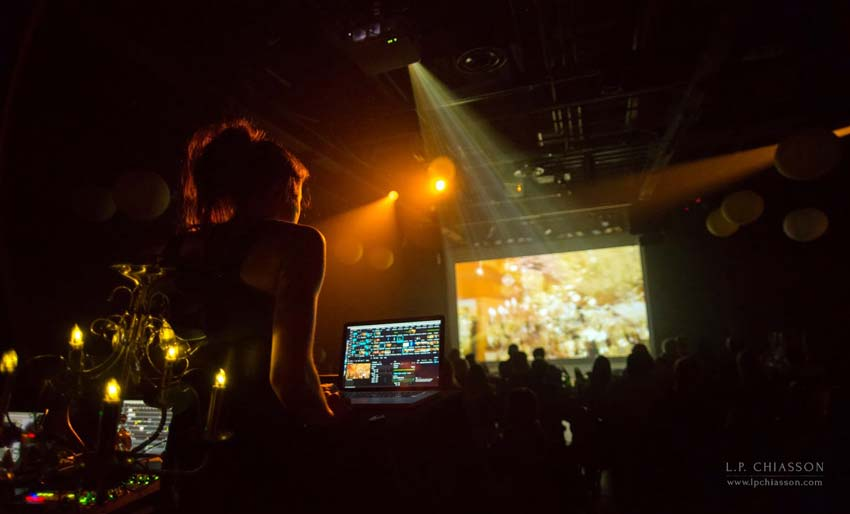
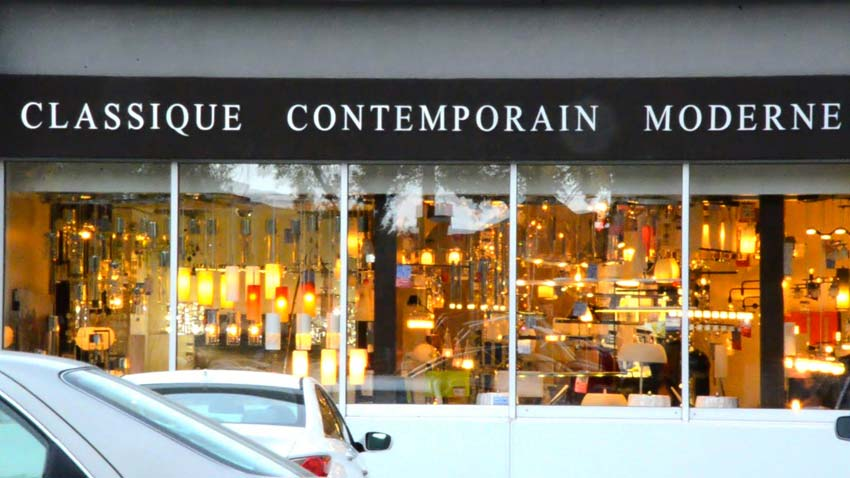

À Séances éphémères, FICFA (Festival International du Cinéma Francophone en Acadie), Moncton NB


Champ de Lunes est une performance audiovisuelle qui explore la phototaxie, phénomène auquel les insectes dirigent leurs mouvements en fonction de la lumière, comme métaphore du comportement similaire chez l’individu en lien avec ses sources d’attractions, communément appellé la déflection. Qu’est-ce qui dévie nos trajectoires, nous distrait et nous emporte ailleurs? En utilisant les outils de vjing, je réorchestre des vidéos d'insectes qui tourbillonnent autour de néons, vidéos enregistrées lors de mes visites chez l'entomologiste Charles Béland avec des enregistrements vidéos pris dans des boutiques de luminaires. Je les accompagne avec des sons de lustres transformés et des enregistrements lors de ma visite chez Bill Oehlke, entomologiste.